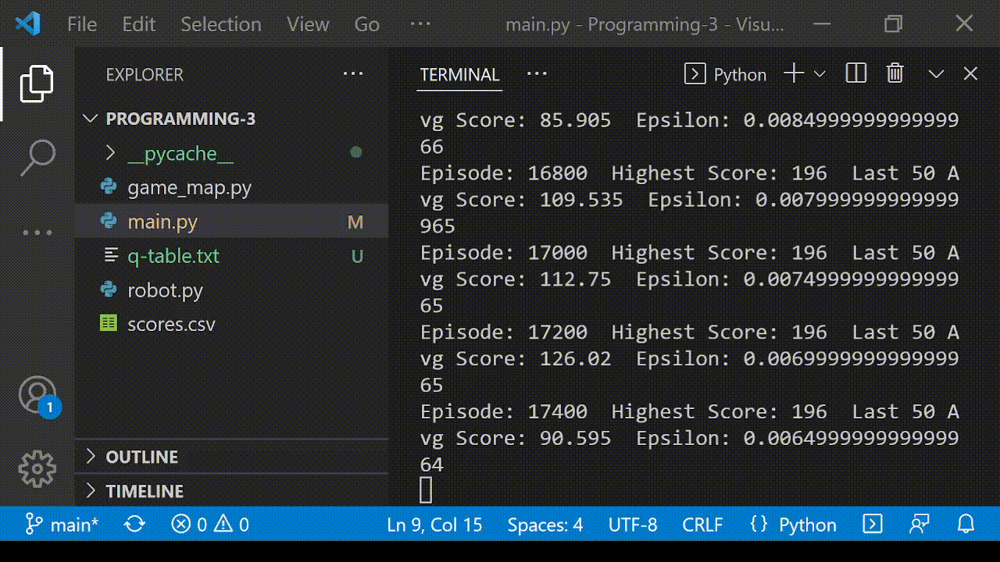
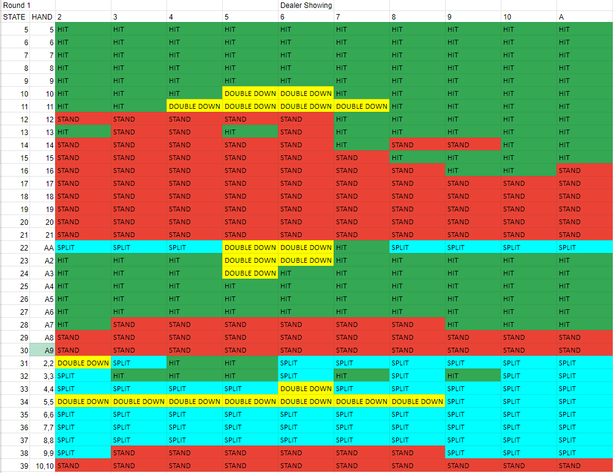
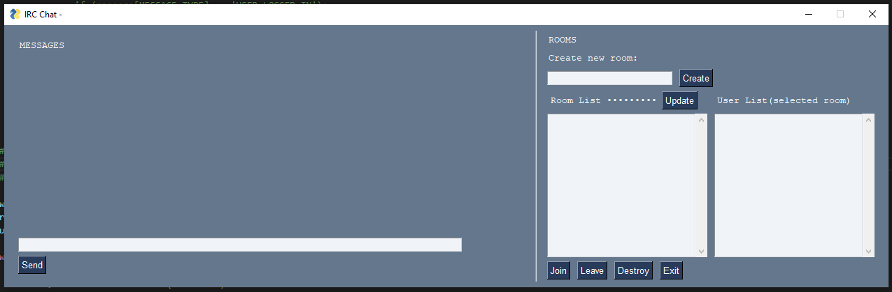
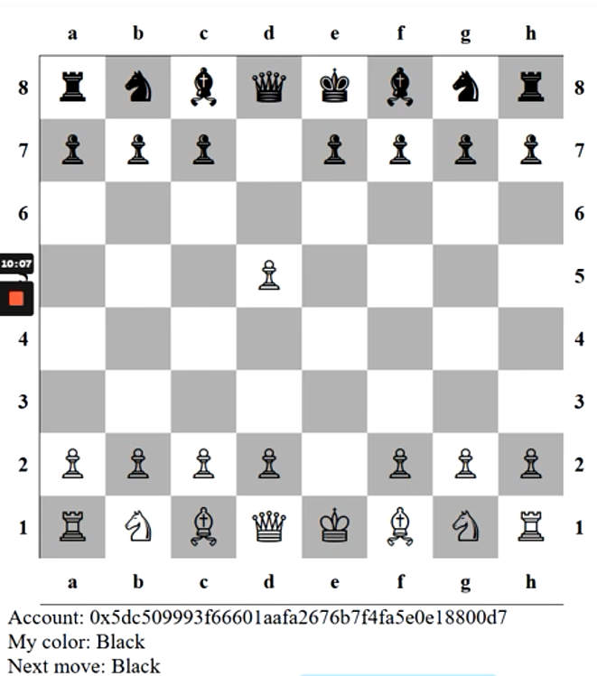

Robby the Robot - Q-Learning
Robby learns how to efficiently pick up cans through a type a reinforcement learning called Q-Learning. The robot preceives the state of the world around and maps those states to actions in a Q-table. The action of 'picking up a can' when the robot's state is 'standing on a can' provides a reward. Over millions of trials played, these rewards are back-filled through the table to provide the robot with a strategy for solving the problem.

Blackjack - Q-Learning
This is another Q-Learning project, but with a larger state-space. The goal in this project is for the AI to learn to play Blackjack against a dealer. At first the AI is playing completely randomly. As it wins the Q-table begins to fill with back-propogated rewards. Eventually, a the performance of the AI begins to approach a net-zero win loss ratio. Since the odds of winning/losing in Blackjack is around 50/50, this is the best outcome without making a card counting AI. The image left or above shows a final strategy Q-table learned by the AI.

IRC Chat - Client and Server - RFC Project
For this project, I created an IRC Chat RFC. The protocol standardized communication between a client and server for logins, creating/joining a chat room, and sending a message. The client program, shown in the image, we created to demonstrate the RFC was complete and provided all of the required functionality. The client was written using Python and utilized Websockets and JSON to communicate with the server.
